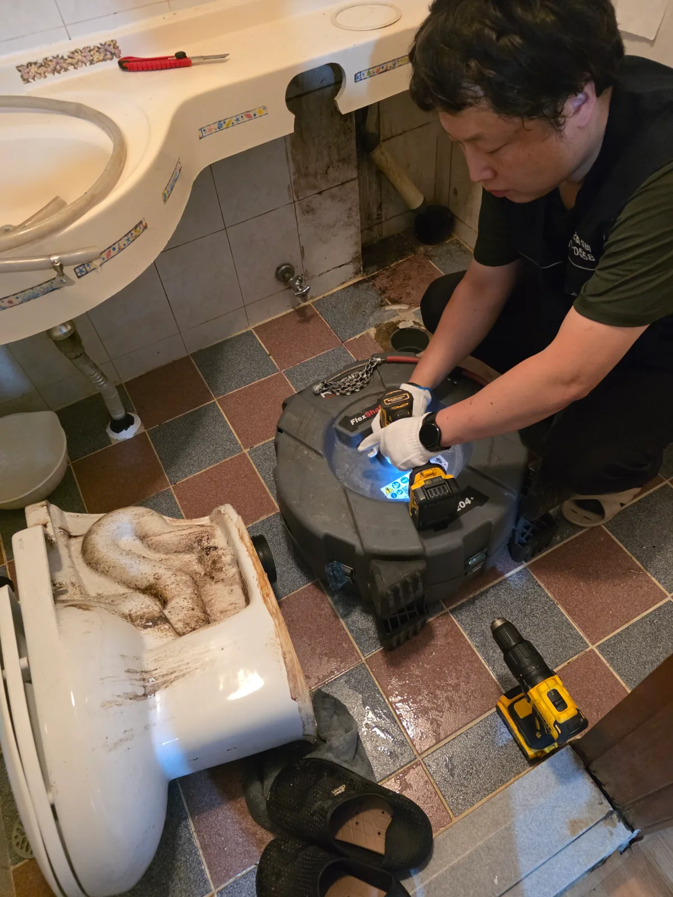

송파구 잠실동 변기막힘, 현장 도착 후 진단
송파구 잠실동에서 변기가 막혀 사용할 수 없다는 긴급 요청을 받고 밤 12시경 현장 작업을 시작했습니다. 늦은 시간이었지만 오수 수위가 계속 높아지면 변기 역류와 화장실 바닥 오염으로 이어질 수 있어 작업을 미루기 어려운 상황이었습니다.
먼저 변기 내부에 휴지나 이물질이 걸렸을 가능성을 확인하기 위해 관통기를 사용했습니다. 이어서 전문 석션 장비로 내부 이물질을 회수하려 했지만 변기 배수는 회복되지 않았습니다.
관통기와 석션기를 모두 사용했는데도 증상이 그대로라는 것은 막힘 위치가 변기보다 더 깊은 구간에 있을 가능성이 크다는 의미입니다. 동일한 작업을 무리하게 반복하지 않고 현재 상태와 추가 점검 범위를 설명한 뒤 변기를 탈거했습니다.
변기를 들어내자 하부 오수관에 오수가 가득 차 있었습니다. 이를 통해 이번 잠실동 변기막힘의 원인이 변기 자체가 아니라 오수관 이후의 배출 구간에 있다는 사실을 확인했습니다.
1단계: 증상 확인과 필요한 장비 작업
변기를 탈거해 확보한 오수관 입구로 리지드 K9-204 플렉스샤프트를 투입했습니다. 회전하는 체인으로 관 내부에 쌓인 이물질과 부착물을 제거하며 실내 오수관을 1차로 작업했습니다.
하지만 실내 오수관에 일시적으로 물길을 만드는 것만으로는 충분하지 않았습니다. 배출을 방해하는 근본적인 막힘이 정화조 방향에 남아 있다면 변기막힘과 역류가 다시 발생할 수 있기 때문입니다.
신라건축설비는 단순히 물이 내려가는 순간만 확인하고 작업을 끝내지 않았습니다. 실내 작업을 마친 뒤 배관이 연결되는 방향을 따라 건물 밖으로 이동해 정화조 위치를 찾았습니다.

2단계: 원인 구간 처리와 정상 작동 확인
외부는 조명이 부족해 시야 확보가 쉽지 않았고, 정화조 뚜껑을 개방한 상태에서 장비와 긴 호스를 운용해야 했습니다. 열린 정화조 주변의 추락 위험과 젖은 바닥의 미끄러짐에 주의하며 조명과 보호장비를 갖추고 작업을 이어갔습니다.
정화조 연결 구간에 배관 내시경을 투입해 내부 상태를 확인한 결과, 출수관 쪽에서 배출 흐름이 막혀 있음을 확인했습니다. 실내 변기에서 시작된 증상의 실제 원인을 건물 외부 정화조 출수관에서 찾아낸 것입니다.
막힘 위치가 확인된 뒤 고압세척 호스를 출수관에 투입했습니다. 강한 수압으로 관 내부의 막힘을 분쇄하고 밀어내며 배출 통로를 세척했습니다. 어두운 야간에 무거운 장비와 긴 고압호스를 운용해야 했기 때문에 작업자의 위치와 호스 움직임을 반복해서 확인하며 안전하게 진행했습니다.
관통기와 석션 작업부터 변기 탈거, 204샤프트 작업, 정화조 탐색, 배관 내시경검사와 출수관 고압세척까지 이어진 작업은 새벽 3시경 마무리됐습니다.

작업 결과와 재발 방지 안내
정화조 출수관 고압세척을 완료한 뒤 막혀 있던 배출 흐름이 정상적으로 회복됐습니다. 자정에 시작된 잠실동 변기막힘 작업은 약 3시간 동안 이어졌지만, 겉으로 나타난 변기 증상만 처리하지 않고 실제 원인이었던 정화조 출수관까지 찾아 해결했습니다.
변기막힘에 관통기와 석션기를 사용해도 물이 내려가지 않거나 변기를 탈거했을 때 하부 오수관에 물이 가득 차 있다면, 공용 오수관과 정화조 출수관까지 점검해야 합니다. 증상은 변기에서 나타나더라도 실제 막힘은 건물 외부의 배출 구간에 있을 수 있습니다.
신라건축설비는 서울 전 지역과 경기권에 24시간 출동해 변기막힘·싱크대막힘·하수구막힘을 전문적으로 해결합니다. 관통기와 석션으로 해결되지 않는 현장도 변기 탈거, 리지드 K9-204 플렉스샤프트, 배관 내시경검사와 고압세척 장비를 복합 운용해 막힘 위치와 원인을 단계적으로 추적합니다.
작업 전에는 현장 상태와 예상 작업 범위를 설명하고, 추가 작업이 필요한 경우 그 이유와 진행 방법을 안내합니다. 단순 생활 막힘부터 공용 오수관과 정화조 출수관 고압세척까지 여러 업체를 따로 부르지 않고 자체적으로 대응할 수 있습니다.
최종 조치: 변기를 탈거해 오수관이 가득 찬 상태를 확인한 뒤 리지드 K9-204 플렉스샤프트로 실내 오수관을 1차 작업했습니다. 이후 외부 정화조를 찾아 배관 내시경으로 출수관 막힘을 확인하고 고압세척을 진행해 배출 흐름을 회복시켰습니다.
현장 방문 전 확인하는 비용과 작업 범위
신라건축설비는 현장 증상과 배관 구조를 확인한 뒤 필요한 작업과 예상 비용을 안내합니다. 단순 관통으로 해결되는지, 배관내시경·석션·고압세척 또는 변기 탈거가 필요한지는 현장 상태에 따라 달라집니다. 출장비와 야간 작업비, 추가 장비 비용이 발생할 수 있는 경우 작업 전에 먼저 설명하고 동의를 받은 범위에서 진행합니다.
업체를 선택할 때 확인할 사항
무조건적인 ‘0원’ 표현보다 실제 작업 범위, 추가 비용 조건, 사용 장비와 사후 대응 기준을 확인하는 것이 중요합니다. 해결되지 않았을 때의 비용 기준과 작업 후 동일 증상 발생 시 점검 범위를 사전에 문의해두면 불필요한 분쟁을 줄일 수 있습니다.
송파구 변기막힘 자주 묻는 질문
변기막힘은 왜 반복되나요?
송파구 잠실동 현장처럼 밤 12시경 변기가 막혀 물이 정상적으로 내려가지 않았습니다. 관통기와 석션기를 사용해도 배수가 회복되지 않아 단순한 변기 내부 막힘이 아닌 하부 오수관 문제까지 의심되는 긴급 상황이었습니다. 증상은 원인이 현장마다 다를 수 있습니다. 변기 내부 이물질뿐 아니라 하부 오수관 막힘이나 배관 상태 때문에 반복될 수 있습니다. 같은 변기막힘이 재발하면 막힌 위치와 원인을 다시 확인하는 것이 중요합니다.
변기 물이 안 내려가거나 역류하면 변기뚫는업체를 불러야 하나요?
물이 천천히 내려가거나 수위가 차오르고 변기역류가 반복되면 단순 뚫어뻥보다 전문 장비 점검이 필요한 경우가 있습니다. 현장에서는 증상과 배관 구조를 먼저 확인합니다.
변기 이물질 막힘은 변기를 탈거해야 하나요?
물티슈·청소포·플라스틱·음식물처럼 변기 트랩에 걸린 이물질은 위치에 따라 변기 탈거가 필요할 수 있습니다. 무조건 탈거하지 않고 먼저 막힘 위치를 판단합니다.
변기뚫는업체는 어떤 장비로 작업하나요?
현장 상태에 따라 석션, 에어건, 배관내시경, 변기 탈거 등을 사용합니다. 하부 오수관 문제라면 변기만 뚫는 작업보다 배관 구간 확인이 중요합니다.
변기막힘 비용은 어떻게 정해지나요?
단순 관통인지, 이물질 제거와 변기 탈거가 필요한지, 오수관이나 공용배관 작업이 필요한지에 따라 달라집니다. 추가 장비나 작업이 필요하면 진행 전에 범위와 비용을 안내합니다.
변기에서 냄새가 나거나 물이 자주 차오르는 것도 막힘과 관련 있나요?
악취나 수위 이상이 항상 막힘 때문인 것은 아니지만 배수 불량, 오수관 상태, 연결부 문제와 함께 나타날 수 있습니다. 반복되면 현장 점검으로 원인을 구분해야 합니다.
변기막힘 서울·경기 출동지역
신라건축설비는 송파구 잠실동 현장을 포함해 서울 25개 구와 경기도 31개 시·군의 배관 문제를 상담합니다. 현장 거리와 기사 배정 상황에 따라 출동 가능 여부를 먼저 안내드립니다.
서울 전 지역
강남구 · 강동구 · 강북구 · 강서구 · 관악구 · 광진구 · 구로구 · 금천구 · 노원구 · 도봉구 · 동대문구 · 동작구 · 마포구 · 서대문구 · 서초구 · 성동구 · 성북구 · 송파구 · 양천구 · 영등포구 · 용산구 · 은평구 · 종로구 · 중구 · 중랑구
경기도 주요 출동지역
수원시 · 용인시 · 고양시 · 화성시 · 성남시 · 부천시 · 남양주시 · 안산시 · 평택시 · 안양시 · 시흥시 · 파주시 · 김포시 · 의정부시 · 광주시 · 하남시 · 광명시 · 군포시 · 양주시 · 오산시 · 이천시 · 안성시 · 구리시 · 의왕시 · 포천시 · 양평군 · 여주시 · 동두천시 · 과천시 · 가평군 · 연천군